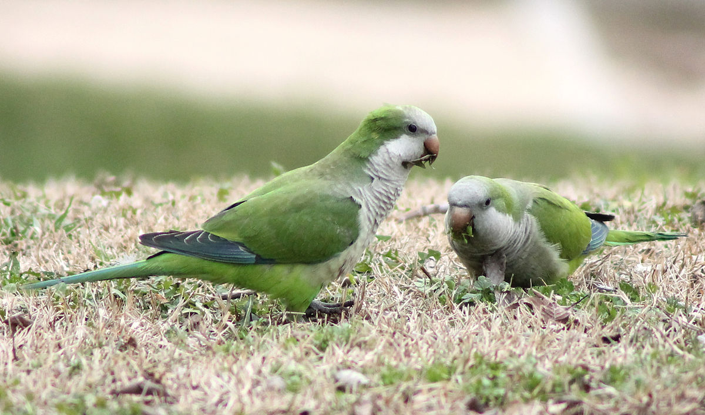
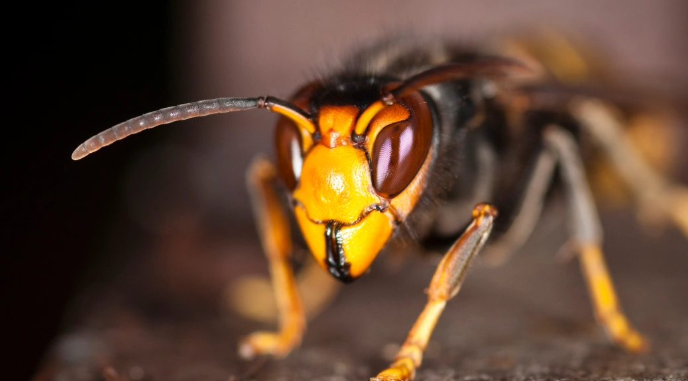

Nuestros Productos
Transformamos especies invasoras en productos sostenibles y de alta calidad.
| Producto | Precio por unidad | Precio al por mayor |
|---|---|---|
| Pieles y Cueros | €50 por unidad | €40 por unidad (mínimo 50 unidades) |
| Carne y Subproductos Alimenticios | €30/kg | €25/kg (mínimo 100 kg) |
| Muestras Biológicas | €100 por muestra | €85 por muestra (mínimo 20 muestras) |
| Fertilizantes Naturales | €20/kg | €15/kg (mínimo 200 kg) |

| Servicio | Precio por intervención | Precio para contratos anuales |
|---|---|---|
| Eliminación de Especies Invasoras | Desde €500 por hectárea | Desde €400 por hectárea (mínimo 5 hectáreas) |
| Gestión y Comercialización de Subproductos | Desde €300 por lote | Desde €250 por lote (mínimo 10 lotes) |
| Asesoramiento Ambiental | €150 por consulta | €120 por consulta (mínimo 10 consultas anuales) |
| Monitoreo y Prevención | Desde €200 por hectárea | Desde €180 por hectárea (mínimo 10 hectáreas) |
| Reforestación y Restauración Ecológica | Desde €800 por hectárea | Desde €700 por hectárea (mínimo 5 hectáreas) |
